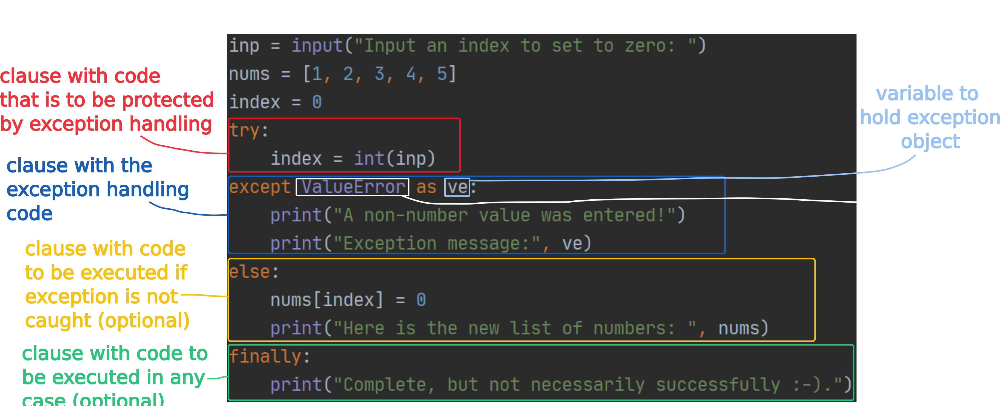

When a runtime error occurs, an exception may be raised (or thrown) using a special language construct: raise an_exception_object
If the program does not handle the exception
the current execution frame (e.g. current function) is terminated
the exception is propagated to the next higher execution frame (e.g. another function that called the current function)
that next higher execution frame is terminated
the exception is propagated to the following higher execution frame
this is repeated until the exception 'reaches the surface' and is presented to the user with any information contained in the exception object when it was raised.
We saw this happening with the three examples earlier on. Those exceptions were raised by built-in Python functionality.
Run the Python script found here in the PyCharm debugger, with a breakpoint on the line where the exception is raised with raise. Look at the Frames portion of the Debugger panel inside the Debug view in PyCharm. This shows the functions currently on the call stack (in our case, main, a, b, c and d). Step over the line with the raise statement. You will see how the print calls at the end of each function are never made, because the exception is propagated through the frames in the call stack, terminating the execution of each function and surfacing to be reported in the console. The whole journey of the exception can be seen in the stack trace.
However, exceptions can be handled. This is done with the try/except/else/finally construct:
Exception handling construct

Copy the following code into a file and run it three times. Once enter a correct index, once an index that is out of range and once a non-number value. Explain what happens.
Example of try/except/else/finally
inp = input("Input an index to set to zero: ")
nums = [1, 2, 3, 4, 5]
index = 0
try:
index = int(inp)
except ValueError as ve:
print("A non-number value was entered!")
print("Exception message:", ve)
else:
nums[index] = 0
print("Here is the new list of numbers: ", nums)
finally:
print("Complete, but not necessarily successfully :-).")
An unhandled exception is raised when the index is out of bounds. Correct the code to handle this exception as well, by adding an except clause that handles exceptions of type IndexError.
Note that all the clauses in the Python exception handling statement constitute the same scope. Any variables defined in clauses above will be accessible to the clauses below.
While the else clause is optional, it is a good idea to make use of it for readability and the case that additional exceptions are raised.
The finally clause is also optional, but it should be used if clean-up or other work using the same scope as the try clause needs to be completed regardless of the outcome.
Exceptions can be explicitly raised in a program.
Exception raising syntax
raise object_of_some_error_class_type
raise
keyword for raising exceptions
object_of_some_error_class_type
an object that for its type has a subclass of Exception
In the following example, an exception of type Exception is raised.
Raising an exception
raise Exception("Something went wrong!)
Exceptions take one or two arguments. The first argument is always a message.
New exception types can be defined
Defining a new exception
class ProblemWithAge(Exception):
pass
In most cases, it is sufficient to define an error type, then use the Exception class message that is already implemented.
Using exceptions
Using exceptions
Exceptions as an error handling mechanism
are, in most cases, easier to write into the code than many nested conditional statements
make code a lot more readable
allow for error reporting and handling to be concentrated rather than strewn around the code
The code in example ? is relatively simple and yet suffers from lack of clarity as to what functionality it implements.
Error handling without exceptions
ageStr = input("Please input your age: ")
if not ageStr.isdigit():
print("ERROR: Age is invalid.")
else:
age = int(ageStr)
if age < 18:
print("ERROR: You are not old enough to use this website.")
else:
quantityStr = input("How many bottles of craft beer do you want to buy? ")
if not quantityStr.isdigit():
print("ERROR: Quantity is invalid.")
else:
quantity = int(quantityStr)
payment = input("Would you like to pay with Revolut or credit card? ")
if payment != 'Revolut' and payment != 'credit card':
print("ERROR: Invalid payment type.")
else:
print("Thank you for your order!")
Rewrite the code above to use exceptions, defining exception classes where needed.
Exceptions should not be used to implement conditional behaviour that is part of the normal, error-free functioning of the program. The following example shows some logically correct code that employs exception handling to provide two different execution paths that are taken depending on a condition. This is not good practice.
BAD PRACTICE EXAMPLE: Exceptions in error-free functionality
# if the entered op is 1, the list is sorted
# otherwise, the list items are converted to uppercase
l = ['apple', 'banana', 'cherry', 'orange', 'peach', 'apricot', 'raspberry']
op = int(input("Enter op number: "))
try:
if op == 1:
print(sorted(l))
else:
raise Exception()
except Exception:
print(list(map(lambda x: x.upper(), l)))